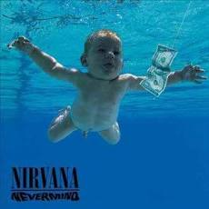

Nevermind
Nevermind is the second studio album by American rock band Nirvana, released on September 24, 1991, by DGC Records. A number of labels courted the band, but Nirvana ultimately signed with Geffen Records imprint DGC Records based upon repeated recommendations from Kim Gordon of Sonic Youth and their management company. Produced by Butch Vig, it was the band's first release on the label, as well as the first to feature drummer Dave Grohl. The album cover, which shows a naked baby swimming with a U.S. dollar bill on a fishhook just out of his reach, is often considered as one of the most famous album covers in popular music.

Unplugged
MTV Unplugged in New York is a live album by American rock band Nirvana, released on November 1, 1994 by DGC Records. album features an acoustic performance recorded at Sony Music Studios in New York City on November 18, 1993, for the television series MTV Unplugged. The show was directed by Beth McCarthy and aired on the cable television network on December 16, 1993. In a break with MTV Unplugged convention, Nirvana played mainly lesser-known material and covers of songs by the Vaselines, David Bowie, Lead Belly, and Meat Puppets, whose members Cris and Curt Kirkwood joined Nirvana onstage.

In Utero
In Utero is the third and final studio album by American rock band Nirvana, released on September 21, 1993, by DGC Records. Nirvana intended for the record to diverge significantly from the polished, refined production of its previous album, Nevermind (1991). Early in 1992, Cobain told Rolling Stone that he was sure that In Utero would showcase "both of the extremes" of its sound, saying "it'll be more raw with some songs and more candy pop on some of the others.